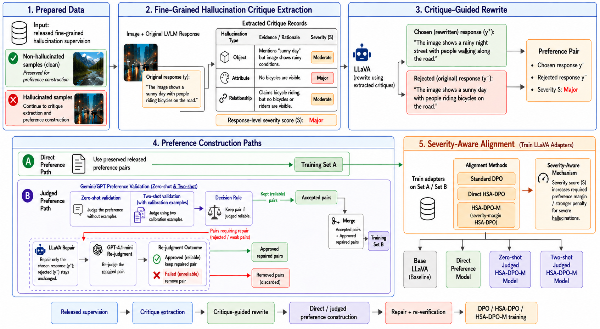
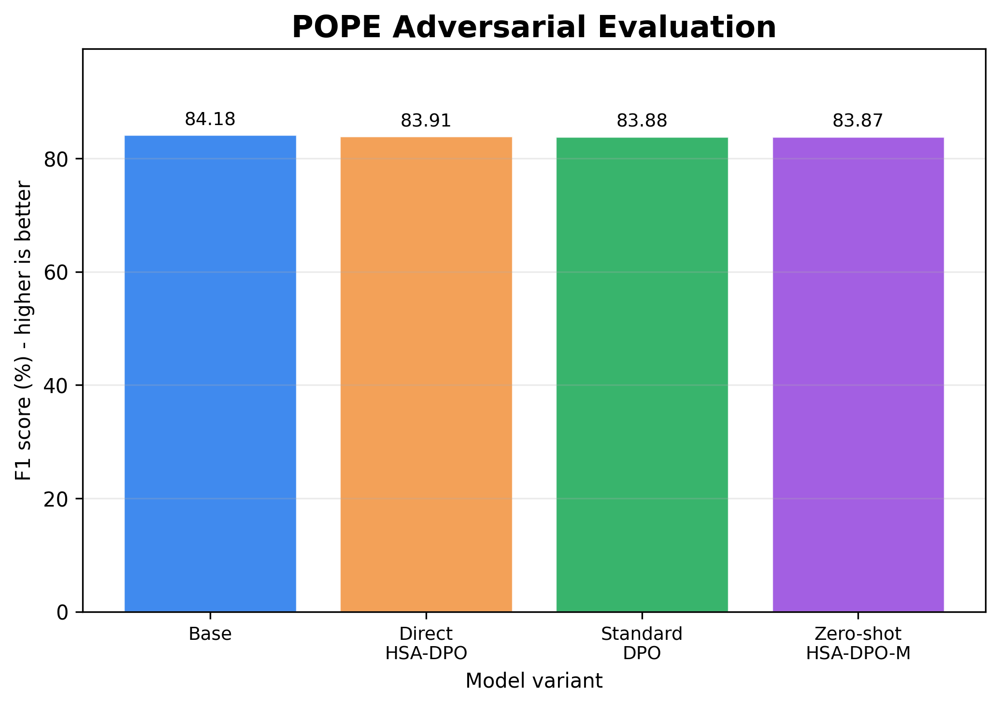
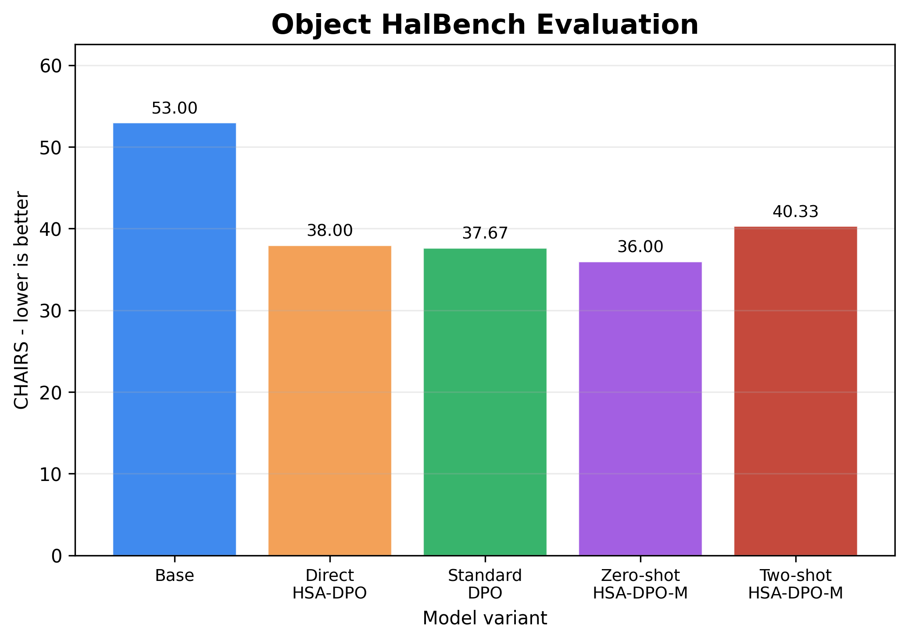
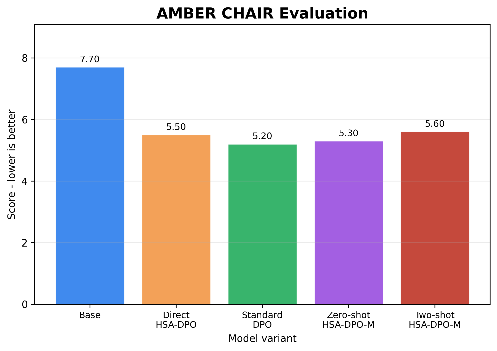
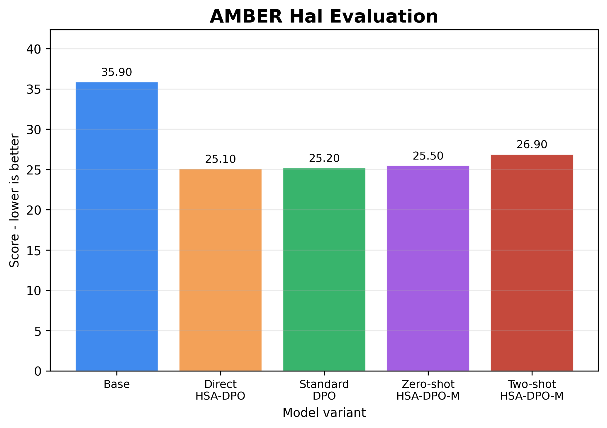

Abstract
Large vision-language models can produce fluent responses containing objects, attributes, or relations unsupported by the image. We study an implemented alignment pipeline that normalizes released fine-grained hallucination supervision, validates chosen–rejected preference pairs with vision-language judges, repairs rejected chosen responses, and trains LLaVA adapters with standard or severity-aware direct preference optimization. The study uses 16,143 normalized feedback records and 8,386 released preference pairs, comparing direct training with zero-shot and two-shot judged severity-margin variants. The zero-shot variant reduces Object HalBench CHAIRs from 53.00 to 36.00 and CHAIRi from 15.72 to 10.41. Across aligned models, AMBER-Hal decreases from 35.90 to 25.10–26.90, accompanied by reduced visual coverage. In contrast, the base model retains the highest valid POPE adversarial F1, 84.18 versus 83.87–83.91 after alignment. These results support benchmark-dependent reductions in generative hallucination rather than uniform superiority of severity-aware alignment. We distinguish implemented pipeline components from the preference paths used in the reported experiments and discuss the limits of attributing gains to judging, repair, or the training objective individually.
Index Terms: vision-language models; visual hallucination; preference validation; direct preference optimization; severity-aware alignment.
I. Introduction
Large vision-language models (LVLMs) combine visual representations with language generation to support image description, visual question answering, and multimodal assistance. BLIP-2, LLaVA, and InstructBLIP illustrate different ways to connect pretrained visual and language components through cross-modal interfaces and instruction tuning [1, 2, 3]. Their fluency, however, does not guarantee that every generated claim is visually grounded. A response may correctly identify the main scene while inventing an object, assigning an unsupported attribute, or describing an incorrect relationship.

This mixture of grounded and unsupported content motivates fine-grained supervision. A response-level label does not indicate which claims require correction or distinguish a minor attribute error from a fabricated entity central to the answer. Fine-grained feedback instead associates errors with categories, evidence spans, rationales, and severity. Previous work has used such feedback for hallucination detection and preference alignment, including HSA-DPO [4, 5]. Our work builds on released supervision from this line of research; it does not introduce a newly annotated benchmark or claim the original severity-aware DPO framework.
Turning feedback into alignment data remains a practical challenge. A rewritten chosen response can retain the original hallucination, introduce another unsupported claim, or remove useful information. Preference optimization then receives a misleading or weak comparison. We investigate a workflow that checks released pairs with external vision-language judges, repairs rejected chosen responses locally, re-verifies repairs, and trains adapters on the retained data. Severity is incorporated either through the direct HSA-DPO path or through a normalized margin in the DPO objective.
What we study
- The conversion of released feedback into inspectable critique records.
- The effect of validation and repair on preference retention.
- Benchmark-dependent alignment behavior of standard DPO, direct HSA-DPO, and judged severity-margin variants.
The zero-shot judged margin variant is strongest on Object HalBench, while simpler baselines are slightly better on selected AMBER measures. None of the variants with valid POPE F1 surpasses the base model. This motivates a practical analysis of preference quality and severity-aware alignment with explicit tradeoffs.
III. Method
III-A Feedback representation and experimental scope
Let Ii denote an image, xi an instruction, and ŷi an original response. We parse released annotations into critique sets Hi = {hij}Tij=1, with an error category, evidence text, rationale, and severity for each available finding. Categories are normalized to object, attribute, and relationship errors when the source provides them. The three-level severity rubric assigns minor, moderate, and major errors scores of 1, 2, and 3. Let Ji index critiques with numeric severity scores. Response severity averages these available scores:
Si = 1|Ji| ∑ j∈Ji sij, |Ji| > 0. (1)
Clean examples retain an empty critique set and are not forced into the rewrite branch. Metadata preserves the original annotation and its provenance.
The pipeline also supports detector-style data construction and critique-conditioned rewriting. A rewriter receives (Ii, xi, ŷi, Hi) and is instructed to remove unsupported claims while preserving supported information. Empty, identical, or otherwise invalid candidate pairs are filtered. These components document the path from annotations to preference data; the reported alignment experiments primarily use the released preference pairs, rather than a complete regeneration of all chosen responses or a newly evaluated learned detector. Figure 1 summarizes the workflow; its example annotations are schematic.
III-B Direct and judged preference paths
A preference example is pi = (Ii, xi, y+i, y−i, Si), where y+i and y−i are the chosen and rejected responses and Si refers to rejected-response severity. The direct path uses the released preference set without additional API judging and supplies the standard DPO and direct HSA-DPO runs.
The judged path presents each released pair and its image to Gemini-2.5-Flash-Lite and GPT-4o-mini. Each judge returns a Boolean approval and a short reason. The reported experiments accept a pair when either judge approves; they do not require agreement between both judges. The rubric asks whether the chosen response clearly improves visual grounding, reduces the identified hallucination, preserves essential supported content, and avoids introducing an important hallucination. Approval is an automated preference-quality decision, not independently established ground truth.
The zero-shot setting supplies the rubric directly. The two-shot setting adds two text-only calibration examples illustrating approval and rejection. The examples explain the decision rule; they are not additional images or annotations for the target sample. A rejected pair is routed to LLaVA-1.5-7B for repair of y+i while y−i remains fixed. GPT-4.1-mini re-verifies repaired pairs using the same approval rubric, with the calibration block in the two-shot setting. Only approved repairs are merged with initially accepted pairs:
Djudged = Daccepted ∪ Dapproved repairs. (2)
Judge decisions and reasons are retained in audit metadata. Repair failures and unsuccessful re-verifications do not enter this final verified set. A subsequent preparation step can further reduce the number of train-ready records; we report both counts.
| Path | Source | Accepted | Rejected | Repaired | Approved repairs | Verified | Train-ready |
|---|---|---|---|---|---|---|---|
| Zero-shot | 8,386 | 7,818 | 568 | 473 | 244 | 8,062 | 8,062 |
| Two-shot | 8,386 | 7,132 | 1,254 | 1,063 | 746 | 7,878 | 7,874 |
III-C DPO and severity-margin alignment
For a trainable policy πθ and frozen reference πref, define the preference gap
Δi = log πθ(y+i ∣ Ii, xi)πθ(y−i ∣ Ii, xi) − log πref(y+i ∣ Ii, xi)πref(y−i ∣ Ii, xi). (3)
Standard DPO minimizes −𝔼i log σ(βΔi) [14]. The direct HSA-DPO run weights the rejected-response log-probability in both the policy and reference terms, leaving the chosen-response terms unweighted, following the released severity-aware training path [5]. The margin variant keeps the ordinary policy/reference gap and shifts it using rejected-response severity:
S̄i = clip(Si, 0, 3) / 3, (4)
ℒmargin = −𝔼i log σ(β [Δi − λS̄i]). (5)
Larger severity requires a larger chosen–rejected gap for the same loss. Setting λ = 0 recovers standard DPO. In the reported judged variants, λ = 0.5 and β = 0.1. This formulation describes the implemented loss, with the margin inside the multiplication by β.
IV. Experimental Setup
IV-A Data and model variants
The normalized feedback collection contains 16,143 records: 7,643 hallucinated and 8,500 non-hallucinated examples. The main alignment source contains 8,386 released preference pairs. These counts describe distinct data representations and should not be added together as independent training examples. Table I summarizes the judged paths.
We compare five models:
- the unaligned LLaVA-1.5-7B baseline,
- standard DPO,
- direct HSA-DPO,
- zero-shot judged HSA-DPO-M, and
- two-shot judged HSA-DPO-M.
All trained variants use the same backbone and nominal optimization settings. Their preference sets differ, so equal epochs and effective batch size do not imply identical numbers of parameter updates. The comparisons do not isolate the effects of judging, repair, severity margin, and sample count individually.
IV-B Training and evaluation protocol
Adapters were trained for one epoch on a rented NVIDIA RTX 6000 Ada Generation GPU with 48 GB VRAM. The DPO coefficient was β = 0.1 throughout. These shared settings support a practical comparison under a common configuration; no repeated-seed uncertainty estimates are available in the retained summaries.
- Backbone
- LLaVA-1.5-7B
- Epochs
- 1
- Per-device batch
- 1
- Effective batch
- 32
- Learning rate
- 2 × 10−6
- LoRA rank / scaling
- 128 / 256
- Max sequence length
- 1024
- Scheduler
- Cosine, no warmup
- Weight decay
- 0
- DPO β / margin λ
- 0.1 / 0.5 (margin variants)
- Hardware
- 1 × NVIDIA RTX 6000 Ada (48 GB)
- Seeds
- Single run; no repeated-seed estimates
Evaluation covers POPE adversarial, Object HalBench, and AMBER. POPE accuracy, precision, recall, and F1 are percentages, with higher values preferred. Object HalBench CHAIRs and CHAIRi quantify sentence- and instance-level object hallucination. We retain the local AMBER-CHAIR, Hal, Cog, and Cover labels used in the experiment report; lower values are preferred for the first three, while higher Cover reflects more visual coverage. Object HalBench and AMBER values are reported as supplemental local evaluations, not assumed to match every published protocol. The retained compact summaries do not establish all sample-level settings or uncertainty; external leaderboard comparisons require additional protocol verification.
V. Results
V-A Preference retention and repair
Table I reports the complete data flow. The zero-shot path retains 8,062 train-ready pairs after 244 approved repairs. The two-shot path recovers 746 repairs, yielding 7,878 verified and 7,874 train-ready pairs. Calibration changes both initial judgment and repair re-verification, so downstream differences cannot be attributed to either stage alone. Judge approval is not independently established ground truth. The appendix provides retention rates and all prompt text.
V-B Binary object-presence evaluation
Table II reports all completed POPE results with valid recall and F1. The base model has the highest F1 at 84.18, compared with 83.88 for standard DPO, 83.91 for direct HSA-DPO, and 83.87 for zero-shot HSA-DPO-M. Precision increases from 89.92 to 90.25–90.70 after alignment, while recall falls from 79.13 to 78.07–78.33. The precision improvement therefore does not translate into higher F1. These small differences have no accompanying uncertainty estimates and should not be interpreted as statistically established rankings.
| Model | Accuracy | Precision | Recall | F1 |
|---|---|---|---|---|
| LLaVA-1.5-7B | 85.13 | 89.92 | 79.13 | 84.18 |
| Standard DPO | 85.00 | 90.63 | 78.07 | 83.88 |
| Direct HSA-DPO | 85.03 | 90.70 | 78.07 | 83.91 |
| Judged margin HSA-DPO-M (zero-shot) | 84.93 | 90.25 | 78.33 | 83.87 |
The two-shot POPE artifact lacks valid recall/F1; this variant is excluded from the POPE table and plot.
V-C Generative hallucination and visual coverage
Table III and Figure 2 show larger numerical changes in generative evaluation. Object HalBench CHAIRs falls from 53.00 to 37.67 for standard DPO, 38.00 for direct HSA-DPO, 36.00 for zero-shot HSA-DPO-M, and 40.33 for two-shot HSA-DPO-M. CHAIRi decreases from 15.72 to 10.41–12.81. The zero-shot judged margin run achieves the lowest values on both Object HalBench metrics. The two-shot model improves relative to the base but does not outperform the zero-shot model.
| Object HalBench | AMBER | |||||
|---|---|---|---|---|---|---|
| Model | CHAIRs | CHAIRi | CHAIR | Hal | Cog | Cover |
| Base LLaVA | 53.00 | 15.72 | 7.70 | 35.90 | 4.30 | 51.70 |
| Standard DPO | 37.67 | 11.98 | 5.20 | 25.20 | 2.50 | 49.90 |
| Direct HSA-DPO | 38.00 | 11.74 | 5.50 | 25.10 | 2.50 | 50.00 |
| Zero-shot HSA-DPO-M | 36.00 | 10.41 | 5.30 | 25.50 | 2.50 | 49.60 |
| Two-shot HSA-DPO-M | 40.33 | 12.81 | 5.60 | 26.90 | 2.70 | 50.40 |




On AMBER, all aligned models reduce CHAIR from 7.70 to 5.20–5.60, Hal from 35.90 to 25.10–26.90, and Cog from 4.30 to 2.50–2.70. Standard DPO yields the lowest AMBER-CHAIR (5.20), and direct HSA-DPO yields the lowest AMBER-Hal (25.10). Consequently, severity-margin judging does not dominate the simpler alternatives across these measures.
AMBER-Cover decreases from 51.70 to 49.60–50.40. This is consistent with a tradeoff between fewer unsupported details and less extensive description, but the aggregate scores alone do not establish a causal mechanism. A stronger analysis would compare matched image-level outputs and distinguish removal of hallucination from omission of correctly grounded content.
VI. Discussion and Limitations
Released feedback supports inspectable critique records, while judging and repair recover some initially rejected pairs. These are data-processing outcomes, not evidence of a newly evaluated detector or error-free preference labels. All aligned models improve the reported generative hallucination metrics, but the zero-shot judged margin model does not dominate the direct baselines across AMBER. More repaired examples in the two-shot path therefore do not imply a better final model.
The study uses one backbone and a limited set of completed runs. Judged variants change filtering, repair, objective, and sample count together; matched-data experiments with fixed update counts are needed to isolate their effects. No independent human audit, repeated-seed comparison, or confidence interval is reported. Hosted judging can depend on model versions, prompts, and acceptance rules; the either-judge rule can retain disputed pairs. Severity is an annotation scale rather than a calibrated real-world risk measure.
The two-shot POPE evaluation is incomplete, and some sample-level evaluation artifacts are not retained. Local benchmark scores should not be equated with external leaderboard protocols without further verification. Future work should complete POPE, recover per-example outputs, test validation-only and repair-only ablations, and evaluate human judgments and visual coverage jointly. The supplementary appendix records implementation details and derived comparisons without claiming additional experiments.
VII. Conclusion
We presented an inspectable preference-validation and severity-aware alignment workflow for visual hallucination mitigation. Using released feedback and preference pairs, the implementation compares direct DPO/HSA-DPO with zero-shot and two-shot judged severity-margin training. All aligned models reduce the reported Object HalBench and AMBER hallucination metrics relative to LLaVA-1.5-7B, with the zero-shot margin variant strongest on Object HalBench. The base model nevertheless retains the highest valid POPE F1, and AMBER coverage decreases after alignment. The evidence therefore supports benchmark-dependent generative improvements with explicit coverage and evaluation limitations. Controlled ablations and complete per-example evaluation are required before attributing the gains to individual pipeline components.
References
- J. Li, D. Li, S. Savarese, and S. Hoi. BLIP-2: Bootstrapping language-image pre-training with frozen image encoders and large language models. ICML, PMLR 202, pp. 19730–19742, 2023.
- H. Liu, C. Li, Q. Wu, and Y. J. Lee. Visual instruction tuning. NeurIPS 36, 2023.
- W. Dai, J. Li, D. Li, A. M. H. Tiong, J. Zhao, W. Wang, B. Li, P. Fung, and S. C. Hoi. InstructBLIP: Towards general-purpose vision-language models with instruction tuning. NeurIPS 36, 2023.
- A. Gunjal, J. Yin, and E. Bas. Detecting and preventing hallucinations in large vision language models. AAAI 38(16), pp. 18135–18143, 2024.
- W. Xiao, Z. Huang, L. Gan, W. He, H. Li, Z. Yu, F. Shu, H. Jiang, and L. Zhu. Detecting and mitigating hallucination in large vision language models via fine-grained AI feedback. AAAI 39(24), pp. 25543–25551, 2025.
- A. Rohrbach, L. A. Hendricks, K. Burns, T. Darrell, and K. Saenko. Object hallucination in image captioning. EMNLP, pp. 4035–4045, 2018.
- Y. Li, Y. Du, K. Zhou, J. Wang, X. Zhao, and J. Wen. Evaluating object hallucination in large vision-language models. EMNLP, pp. 292–305, 2023.
- J. Wang, Y. Wang, G. Xu, J. Zhang, Y. Gu, H. Jia, J. Wang, H. Xu, M. Yan, J. Zhang, and J. Sang. AMBER: An LLM-free multi-dimensional benchmark for MLLMs hallucination evaluation. arXiv:2311.07397, 2023.
- T. Guan, F. Liu, X. Wu, R. Xian, Z. Li, X. Liu, X. Wang, L. Chen, F. Huang, Y. Yacoob, D. Manocha, and T. Zhou. HallusionBench: An advanced diagnostic suite for entangled language hallucination and visual illusion in large vision-language models. CVPR, pp. 14375–14385, 2024.
- X. Chen, C. Wang, Y. Xue, N. Zhang, X. Yang, Q. Li, Y. Shen, L. Liang, J. Gu, and H. Chen. Unified hallucination detection for multimodal large language models. ACL, pp. 3235–3252, 2024.
- F. Liu, K. Lin, L. Li, J. Wang, Y. Yacoob, and L. Wang. Mitigating hallucination in large multi-modal models via robust instruction tuning. ICLR, 2024.
- L. Li, Z. Xie, M. Li, S. Chen, P. Wang, L. Chen, Y. Yang, B. Wang, and L. Kong. Silkie: Preference distillation for large visual language models. arXiv:2312.10665, 2023.
- T. Yu, Y. Yao, H. Zhang, T. He, Y. Han, G. Cui, J. Hu, Z. Liu, H. Zheng, M. Sun, and T. Chua. RLHF-V: Towards trustworthy MLLMs via behavior alignment from fine-grained correctional human feedback. CVPR, pp. 13807–13816, 2024.
- R. Rafailov, A. Sharma, E. Mitchell, C. D. Manning, S. Ermon, and C. Finn. Direct preference optimization: Your language model is secretly a reward model. NeurIPS 36, pp. 53728–53741, 2023.
Appendix
The supplement records details of the reported runs and their implementation. It adds no new training or benchmark evaluation. Figure 1 is a schematic overview; its example scene, error labels, and aggregate severity are illustrative.
A. Experimental configuration and objectives
A-A Data representations and model roles
The 16,143 normalized feedback records contain 7,643 hallucinated and 8,500 clean samples. Each critique can retain type, evidence text, rationale, severity label, numeric severity, and raw annotation provenance. Unknown or missing critique scores are not replaced by fabricated severity labels. The aggregation helper averages available numeric scores and returns 0 when none are available. Clean records remain outside the hallucination rewrite branch. Detector-style data preparation is implemented, but the reported alignment runs primarily consume 8,386 released preference pairs. The feedback count and preference count are not disjoint populations to be summed as a training-set size.
The base model and repair model are LLaVA-1.5-7B. Initial pair validation uses Gemini-2.5-Flash-Lite and GPT-4o-mini. A pair is retained if either judge approves. Rejected pairs are repaired by changing only the chosen response; the rejected response and its severity remain unchanged. GPT-4.1-mini re-verifies repaired pairs, and only approved repairs join the initially accepted set. The two-shot condition inserts two text-only examples into both initial validation and repair re-verification. It changes more than one judging stage.
A-B Shared training settings
Table IV records settings described in the experiment report and supported by the experiment-specific wrappers. The direct standard-DPO and HSA-DPO wrappers set one epoch and effective batch size 32, overriding the generic launcher's defaults. The two-shot margin wrapper also sets these values explicitly. Hardware is reported as a rented NVIDIA RTX 6000 Ada Generation GPU with 48 GB VRAM. Equal epochs with different data sizes do not imply equal update counts.
| Setting | Value |
|---|---|
| Backbone | LLaVA-1.5-7B |
| Epochs | 1 |
| Per-device batch size | 1 |
| Effective batch size | 32 |
| Learning rate | 2 × 10−6 |
| LoRA rank / scaling factor | 128 / 256 |
| Maximum sequence length | 1024 |
| Scheduler | Cosine |
| Warmup steps / weight decay | 0 / 0 |
| DPO coefficient β | 0.1 |
| Margin scale λ | 0.5 (margin variants) |
| Severity normalizer | 3 |
The launcher additionally specifies BF16, TF32, gradient checkpointing, a multimodal-projector learning rate of
zero, and DeepSpeed ZeRO-3 configuration. These are implementation settings, not independently recovered
historical runtime logs. The repair wrapper defaults to the vicuna_v1 conversation mode and
temperature 0.0. Hosted validation uses temperature 0.0; OpenAI image requests specify detail=low,
while Gemini receives inline image bytes. Token limits are optional in these entry points, so an exact historical
generation cap is not inferred from defaults. Local environment overrides and hosted model revisions can affect
reproduction.
A-C Explicit training objectives
Let ℓ+θ,i = log πθ(y+i ∣ Ii, xi) and ℓ−θ,i = log πθ(y−i ∣ Ii, xi); define ℓ+ref,i and ℓ−ref,i analogously. The standard preference gap is
Δi = (ℓ+θ,i − ℓ−θ,i) − (ℓ+ref,i − ℓ−ref,i). (6)
The standard loss is ℒDPO = −𝔼i log σ(βΔi). In the direct HSA-DPO run, chosen-score weighting is disabled and rejected-score weighting enabled. With released rejected score wi, the implemented gap is
ΔHSAi = (ℓ+θ,i − wi ℓ−θ,i) − (ℓ+ref,i − wi ℓ−ref,i), (7)
and ℒHSA = −𝔼i log σ(βΔHSAi). This is weighting of rejected log-probability terms, rather than multiplication of the entire per-example loss. The judged margin variants instead use
S̄i = clip(Si, 0, 3) / 3, (8)
mi = λS̄i, (9)
ℒmargin = −𝔼i log σ(β(Δi − mi)). (10)
For a per-example loss Li, its derivative with respect to the gap is
∂Li∂Δi = −β σ(−β(Δi − mi)). (11)
Thus, at a fixed gap, increasing severity increases the magnitude of the preference gradient. For λ = 0.5 and Si = 1, 2, 3, the gap margins are 1/6, 1/3, 1/2, and the corresponding logit shifts are approximately 0.0167, 0.0333, 0.0500 at β = 0.1. These are algebraic properties of the implemented objective, not additional empirical results.
B. Supplementary comparisons and evidence limits
Tables V and VI are calculations from the counts and scores in the main paper. They introduce no new model runs. Rates are rounded to two decimal places; signed score differences use the reported two-decimal values.
| Path | Initial acceptance | Rejected pairs repaired | Repair approval | Verified retention | Train-ready retention |
|---|---|---|---|---|---|
| Zero-shot | 93.23 | 83.27 | 51.59 | 96.14 | 96.14 |
| Two-shot | 85.05 | 84.77 | 70.18 | 93.94 | 93.89 |
| Model | POPE F1 | CHAIRs | CHAIRi | AMBER-CHAIR | Hal | Cog | Cover |
|---|---|---|---|---|---|---|---|
| Standard DPO | −0.30 | −15.33 | −3.74 | −2.50 | −10.70 | −1.80 | −1.80 |
| Direct HSA-DPO | −0.27 | −15.00 | −3.98 | −2.20 | −10.80 | −1.80 | −1.70 |
| Zero-shot HSA-DPO-M | −0.31 | −17.00 | −5.31 | −2.40 | −10.40 | −1.80 | −2.10 |
| Two-shot HSA-DPO-M | — | −12.67 | −2.91 | −2.10 | −9.00 | −1.60 | −1.30 |
For a path with N = 8,386 source pairs, initially accepted count A, repaired count R, and approved repair count V, verified retention is (A + V)/N. Repair approval is V/R; it is not measured against all initially rejected pairs. Some rejected examples do not produce retained repair candidates. The zero-shot counts satisfy 7,818 + 244 = 8,062, and the two-shot counts satisfy 7,132 + 746 = 7,878. The latter becomes 7,874 train-ready records. A four-record preparation loss is observed, but its sample-specific causes are not established by the compact summaries.
For a metric q, Table VI reports Δq = qmodel − qbase. Negative changes favor lower-is-better hallucination measures, but indicate deterioration for POPE F1 or AMBER-Cover. Relative reduction, when useful, is (qbase − qmodel)/qbase. Zero-shot Object HalBench CHAIRs falls by 17.00 score points, a 32.08% relative reduction. Its CHAIRi falls by 5.31 points, a 33.78% relative reduction. These arithmetic summaries do not establish statistical significance.
The score-difference table is a metric comparison matrix, not a confusion matrix. Exact true-positive, false-positive, true-negative, and false-negative counts cannot be recovered reliably from rounded precision, recall, and accuracy without the evaluated sample count and prediction records. No confusion matrix, confidence interval, seed variance, or per-category error distribution is fabricated. No independent human preference audit is available in this report. The two-shot POPE recall/F1 remain unavailable.
Benchmark interpretation remains task-specific. POPE adversarial is binary object-presence evaluation. Object HalBench measures unsupported object mentions in generated responses. The retained local AMBER summaries include hallucination and coverage measures. Before claiming equivalence with a published leaderboard protocol, reproduction should verify image subsets, prompts, generation settings, answer parsing, evaluator versions, and per-example outputs. These details are not all recoverable from the retained aggregate records. More conservative responses are a plausible explanation for the observed precision/recall and coverage tradeoffs, rather than an established causal mechanism.
C. Prompts for the reported judged-preference paths
The following templates are extracted from the implementation. Braced fields indicate substituted sample content. The image is supplied separately to the vision-language model; the calibration examples are text only.
C-A Preference validation (Gemini-2.5-Flash-Lite and GPT-4o-mini)
The same zero-shot template is used by both judges. The either-judge rule is applied after the two individual outputs and is not a request for judge consensus. For the two-shot setting, the block in C-B is inserted immediately before "Target pair to judge."
You are validating a hallucination-mitigation preference pair for a vision-language model.
Use the image as the source of truth.
Return exactly one JSON object and no other text.
The JSON object must have exactly these keys: approved, reason.
approved must be a JSON boolean.
reason must be one concise sentence.
Approve when the chosen rewrite clearly improves factual visual grounding over the rejected response, removes or reduces the tagged hallucination, and does not introduce a new important hallucination.
Reject when the chosen rewrite is still unsupported by the image, loses essential correct content, or is not clearly better than the rejected response.
Be conservative, but do not reject only because the chosen response is shorter.
Target pair to judge:
Question:
{question}
Rejected/original response:
{rejected_response}
Chosen/rewrite response:
{chosen_response}
Original hallucination tags and severity:
{rejected_tag_text}
Return only the JSON object now.
C-B Two-shot calibration block
Two calibration examples follow. They are text-only examples for the decision rubric; do not assume their visual details are present in the target image.
Example 1:
Question:
Describe the image.
Rejected/original response:
The image shows a child holding a red umbrella while a dog walks nearby.
Chosen/rewrite response:
The image shows a child holding an umbrella.
Original hallucination tags and severity:
object hallucination: dog nearby; attribute hallucination: red umbrella; severity major
Expected JSON:
{"approved": true, "reason": "The chosen response removes the unsupported dog and color claims while preserving the grounded umbrella detail."}
Example 2:
Question:
What is happening in the scene?
Rejected/original response:
A man is sitting on a bench with a bicycle beside him.
Chosen/rewrite response:
A man is sitting on a bench beside a motorcycle in a park.
Original hallucination tags and severity:
object hallucination: bicycle beside him; severity moderate
Expected JSON:
{"approved": false, "reason": "The chosen response introduces unsupported motorcycle and park details, so it is not a reliable improvement."}
C-C Rejected-pair repair (LLaVA-1.5-7B)
LLaVA receives the current chosen response, fixed rejected response, annotation text, and recorded API feedback (judge family, approval decision, and reason). Repair modifies the chosen text only; the rejected text and score are preserved.
You are repairing a hallucination-mitigation rewrite for a vision-language model.
Use the image as the source of truth.
Produce only the final corrected answer, with no markdown and no explanation.
The current chosen rewrite was rejected by the API judges. Revise it so it is better grounded in the image, preserves correct useful details, removes unsupported details, and avoids adding new unsupported claims.
Question:
{question}
Original rejected response:
{rejected_response}
Current chosen rewrite:
{chosen_response}
Original hallucination tags and severity:
{rejected_tag_text}
API judge feedback:
{judge_feedback}
Final corrected answer:
C-D Re-verification and output contract (GPT-4.1-mini)
GPT-4.1-mini reuses the validation template with the repaired answer in the chosen field and the original rejected answer unchanged. The two-shot condition reuses the same calibration block. Initially accepted pairs and approved repairs are merged; failed repairs are excluded. The schema below is an illustration, not an observed approval.
{"approved": true, "reason": "..."}
D. Supporting annotation and rewrite templates
These templates document implemented supporting paths. They are not evidence that all released annotations were
regenerated, that a new detector was evaluated, or that every released preferred answer was rewritten locally.
Released annotations and preference pairs remain the main supervision sources for the reported experiments.
{severity_rubric} expands to the rubric in D-A.
D-A Severity rubric
Severity rubric: - Minor (1 point): localized visual error that does not alter the main scene understanding. - Moderate (2 points): noticeable object, attribute, or relation error that changes part of the scene. - Major (3 points): central object, count, action, or relation error that substantially changes the answer. Use only Minor, Moderate, or Major.
D-B Detailed-description annotation
Uses Visual Genome region information and a description. Provided for annotation-path reproduction, not as evidence of a new hosted relabeling run.
Task instructions:
You are tasked with evaluating the accuracy of a detailed description of an image against provided Visual Genome regions. Identify hallucinated object, attribute, and relationship claims, explain why they are hallucinations, assign severity scores, and provide a corrected rewritten description.
{severity_rubric}
Image Regions Information:
{regions}
Description:
{description}
Output Format:
Tagged Description:
Reasons:
Scores:
Rewritten Description:
D-C Visual complex reasoning annotation
Task instructions:
You are tasked with evaluating the accuracy of a complex reasoning answer for an image. Identify hallucinated object, attribute, and relationship claims, explain why they are hallucinations, assign severity scores, and provide a corrected rewritten answer. Do not tag more than three hallucination sentences.
{severity_rubric}
Complex reasoning:
{reasoning}
Output Format:
Question and Tagged Answer:
Reasons:
Scores:
Rewritten Answer:
D-D Local detector
The output contains the three normalized categories, evidence spans, severity, and rationale, or the exact clean-response string.
You are the FAIF hallucination detector used for paper-path reproduction.
Given the image, the task context, and a candidate response, output exactly one of:
NO HALLUCINATION
or a fine-grained Tags/Scores report.
Tags format:
Tags:
<object>
1. hallucinated object claim
<attribute>
1. hallucinated attribute claim
<relationship>
1. hallucinated relationship claim
Scores format:
Scores:
<object>
1. Evidence span: Major (3 points): concise visual rationale
{severity_rubric}
Rules:
- Use only the three hallucination types: object, attribute, relationship.
- If no hallucination is present, output NO HALLUCINATION exactly.
- Do not include confidence, calibration, prose preambles, or markdown.
Question or task context:
{question}
Candidate response:
{candidate_response}
D-E Critique-guided rewrite
The critique field is formatted as a list of type, severity, evidence text, and rationale.
You are rewriting a hallucinated vision-language response for the FAIF paper path.
Use the image and verified critiques to produce the preferred answer.
Question or task context:
{question}
Original response:
{original_response}
Detected hallucination tags and reasons:
{formatted_critiques}
Instructions:
- The tags may not always be correct; rely on the image and remove only unsupported claims.
- Correct or remove every identified hallucination.
- Preserve accurate visual content from the original response.
- Do not add unsupported objects, attributes, relations, counts, actions, or identities.
- Output only the rewritten answer.
D-F Optional critic and feedback-guided revision
The optional critic returns feedback rather than a replacement answer; the revision template then produces revised text. This branch should not be conflated with the released-pair repair path used in the judged experiments.
You are a critic for a hallucination-mitigation rewrite of a vision-language response.
Your job is to provide feedback only. Do not write the final answer.
Question or task context:
{question}
Original response:
{original_response}
Detected hallucination tags and reasons from the local detector:
{formatted_critiques}
Initial rewritten response:
{initial_rewrite}
Check the initial rewrite against the image and detector findings.
Return concise feedback about remaining hallucinations, unsupported additions, removed correct details, or over-edits. If the rewrite is acceptable, return exactly: NO CRITICAL ISSUES.
Do not provide a replacement answer. Do not use markdown tables.
---
You are revising a hallucination-mitigation rewrite for the final preference pair.
Use the image, local detector findings, the initial rewrite, and critic feedback.
Question or task context:
{question}
Original response:
{original_response}
Detected hallucination tags and reasons:
{formatted_critiques}
Initial rewritten response:
{initial_rewrite}
Critic feedback:
{critic_feedback}
Instructions:
- The detector and critic feedback may be wrong; rely on the image.
- Remove unsupported claims and preserve correct supported details.
- Do not add unsupported objects, attributes, relations, counts, actions, or identities.
- Output only the final revised answer.